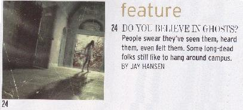

Forgotten Ohio occasionally gets some attention in the press and even wins an award on rare occasions. Below I have assembled my brushes with minor notoriety in reverse chronological order.
A reporter for the Toledo Blade who is coincidentally a friend of mine, Angie Schmitt, interviewed me for the Halloween 2008 edition of that newspaper. I'm not certain which day it ran on, and I don't have the article reproduced yet, but it was definitely cool to have been consulted by one of the state's major papers.
On October 30, 2008, I was interviewed by Rik Elliot, the morning show host at Canton's Mix 94.1 FM. Very fast-paced, very professional, and fun to do. Thanks to Rik for having me on the show.
My first four-hour, all-night interview took place from 1-5AM in the earliest part of October 21, 2008. The very funny and entertaining Orin first accompanied me to some Cleveland-area haunted spots, then conducted the whole thing on-air at WCSB 89.3 FM, the Cleveland State University radio station. Certainly the most interesting all-nighter I've ever done.
Twice in October 2007, once on the 10th and then again on the 29th, I was interviewed by DeLuca in the Morning on Canton's Q92 FM. Both times were great fun, despite the ungodly hour of the morning, and Dom DeLuca is a nice guy as well as unusually funny.

The Dayton Daily News for January 7, 2006 has an article about my book Weird Ohio. Author Laura Dempsey includes lots of material about the website as well as the book and quotes from an interview she and I did in early January. It's a great piece, very generous in its praise of Weird and Forgotten Ohios alike. Read the article here.
My third and most recent appearance in the pages of the OSU Alumni Magazine is as a participant in the belated Halloween story by Jay Hansen. It appears in the November/December 2005 issue, and in it I am quoted talking about the Jeffrey Dahmer ghost stories on campus, among others. My thanks to Jay Hansen for interviewing me and mentioning the website.

The Ohio State University Alumni Magazine story
On Saturday, October 29, 2005, I was invited for the third time to appear on the Ohio News Network as a Halloween guest, talking about real haunted places around the state. I talked about the Walker Funeral Home, Greenlawn Cemetery, and the Statehouse, among other places, and plugged my new book as well. The interview ran during the weekend news all day Saturday and on Sunday, October 30 as well. I got a lot of hits and great feedback from the appearance; my thanks as always to producer Amy Backus for inviting me on, and to anchor Mike Raymond for conducting the interview.
The Fairfield Towne Crier for the week of October 23, 2005, included several citations of me and Forgotten Ohio, plus the text of my account of the haunting of Baldwin Run. It also included material from Beth Santore's website Grave Addiction.
The Halloween 2005 Fairfield Towne Crier article
The Zanesville Times Recorder for October 23, 2005 included an article by Tonya Shipley and Kathy Thompson entitled "Skeptic, Believer Visit Area's 'Haunted Places.'" They quote Beth from Grave Addiction in places, and mention having found the haunted places for their trip on Forgotten Ohio. Read the article here.
On Wednesday, May 4, 2005, the website was one of the featured links in the Zuko's CyberScoop segment on WCOL 92.3FM in Columbus.
In March and April of 2005 a half-hour-long interview with me ran many, many times on Educable 25's Skyline Columbus. This student-produced and student-staffed show is a production of Capital University's Department of Communication. Each episode is devoted to some facet of life in Columbus, usually an event (the State Fair, Make a Wish), place (Southern Theater, Wexner Center), or person (Jack Hanna, Dino Tripodus) that's interesting or entertaining in some way. In my case they made an exception and asked me to be the subject of an episode filmed in mid-January. Before the in-studio interview, producer Kat Sharp accompanied me to a few places featured on the website, including the haunted woods on Old Xenia Road, Walhalla Road, and the Gates of Hell drainage system, and filmed them for the story. The completed Skyline episode about Forgotten Ohio was wonderful; I couldn't have been happier with the way it came out, or more honored to have been asked to participate. My thanks to Executive Producer Victor Van Buchem, student producer and editor Kat Sharp, and everyone else involved.
February 23, 2005 saw the airing of a story Illicit Ohio's Ryan and I filmed with WCMH 4, the NBC affiliate in Columbus. It ran on the morning and afternoon newscasts with anchor Andy Dominianni, who also accompanied us on our most recent visit to the abandoned Junction City Prison. While it's still there you can check out the specific story on their website by clicking here. My thanks to Mr. Dominianni, our cameraman, and my frequent accomplice, Ryan.
An October 30, 2004 special edition of The Athens News contained a piece about local legends in the world's most haunted college town. Author Christopher Gohlke interviewed me and cited me by name, as well as including some material about Forgotten Ohio.
The Halloween 2004 Athens News article
October 29 of 2004 was the day Ohio State University's student newspaper, The Lantern, ran its "campus hauntings" feature, and they cited research from Forgotten Ohio in the body of the article. Read it here.
The September 16, 2004 review of the Mutz brew pub in Toledo included mention of the hauntings which plague its host building, the Oliver House. The Independent Collegian, the University of Toledo's student newspaper, was good enough to mention and cite Forgotten Ohio when they discuss the ghost legends. Read the article here.
My radio interview with the West Virginia Public Broadcasting program "Inside Appalachia" aired in late July of 2004. Host and producer Beth Vorhees interviewed me about ghost towns in Ohio's Appalachian counties, including Perry, Vinton, and Athens.
On June 7, 2004, National Public Radio aired a story about the Cincinnati Subway--particularly its history and the popularity of guided tours. They cited Forgotten Ohio and linked to it from the main NPR page for the story. You can listen to the story itself online, by clicking here and downloading the audio file.

Each evening between October 27 and October 31, 2003, interviews with me aired on NBC 22 and FOX 45 in Dayton. They talked to me about several SW Ohio ghost stories, including Woodland Cemetery and the Franciscan Medical Center. Thanks to the station and everyone for having me on.
October 31, 2003, was the day I spent an hour or so on the air with Andyman at CD101 FM in Columbus, being interviewed before and after station breaks about Ohio ghost stories. I got plenty of new information about hauntings at the Max & Erma's in German Village, Pataskala's "Goonie House," and the Worley Plumbing building (which houses CD101 broadcast headquarters), to name just a few. My thanks to Andyman and everyone at the station for having me on the air.
In October of 2003, Ohio's Country Journal ran a second Halloween article for which they interviewed me. Assistant editor Matt Reese used quotes from some Forgotten Ohio stories.
. . . .

The 2003 Ohio's Country Journal article
My first live talk radio interview took place at midnight on October 5, 2003. My thanks to the guys at the Hour of Tower Radio Show on 1300 AM Cleveland, as well as those people who called in with questions.
October 2003 saw the publication of Columbus Monthly's Halloween feature, which profiles a number of haunted places in and around the capital city. Josie Rubio contacted me for this story and quotes me in a couple of places, including the last paragraph. This is a beautifully laid-out and extremely well-written article--in fact, I'd say it's the best magazine piece I've ever read on Ohio hauntings. Click below to take a look at it.
The Columbus Monthly story
In October of 2003 my name was in the OSU Alumni Magazine again, except this time the piece was written by me rather than about me. It's an article called "Through the Keyhole: Unlocking Ohio State's Hidden Spaces," and it deals with places on campus which are generally off-limits to the general public. It also turned out to be the story editor Lynne Bonenberger went with for the cover. To read the article, click below.
The Ohio State University Alumni Magazine cover story
The November 2002 issue of the Ohio State University Alumni Magazine contained a piece about me, my website, and my first book. I even met with a photographer and did a shoot at Fort Hayes, and a picture of me did make it into the pages of the magazine, but I've cropped it out here to prevent unintended effects from my hypnotic glare. To read the article, click below.
The Ohio State University Alumni Magazine article
. . . . .
On October 31, 2002, the site was mentioned on CD101 FM in Columbus. That same day, for the second Halloween in a row, I appeared on the Ohio News Network's Prime Time Ohio to discuss Ohio ghost stories. My thanks to Andyman at CD101 and Amy Backus and John Fortney at ONN.
On October 28, 2002, the site was mentioned on the air as a Columbus-area resource for haunted house information on Sunny 95, 94.7 FM Columbus. It was featured on the morning show with Dino and Stacy.
During Halloween week 2002 the site was mentioned on the air on WNCI 97.9 FM in Columbus.
Although not exactly a media appearance, I did have the opportunity to appear at Borders bookstores in Cincinnati (Oct. 25) and Dayton (Oct. 26) to speak about Ohio ghost stories for Halloween. Thanks to the managers of both stores and Joe Deeters, who arranged the presentations.
For their Halloween 2002 edition, the farming magazine Ohio's Country Journal interviewed me about Ohio ghost stories. You can read the piece in three parts below.
. . . .
The 2002 Ohio's Country Journal article
I must say I'm very pleased with the piece in the July 4, 2002, edition of the Columbus Alive. It's nicely written, and Alive editor Brian Lindamood compares me to Indiana Jones, which is of course exactly right. I may be the only local celebrity who drives a fourteen-year-old car.
The Columbus Alive article
Following the release of my book, Forgotten Columbus, the Columbus Dispatch ran a piece by Joe Blundo about the book and the website. After interviewing me the previous Monday the article appeared on the front page of the Accent section on Thursday, June 7, 2002. I thought it was a very nicely-done piece. To read it, click below.
The Columbus Dispatch article
In February 2002, I was the recipient of the coveted MC Hawking Dope, Phat, Fresh, Fly, Stoopid-Fresh Site Award. This award comes from MC Hawking's Crib, the only website dedicated to chronicling Professor Stephen Hawking's lesser-known second career as a gangsta rapper. I'm honored to have received the award.
The website was mentioned in a January 2002 letter to Tastes Like Chicken, a Columbus humor newspaper. This was followed by another mention in the February issue. If you don't get Tastes Like Chicken, get your ass up on campus and get a copy. Being funny is hard to pull off in any format, but they do it nicely.
|
|
|
|
Tastes Like Chicken 1 |
Tastes Like Chicken 2 |
By far the biggest piece of press coverage ever to involve my website was the article which ran in The Washington Post on December 30, 2001. The story, written by Carolyn Crowley, is titled "Urban Explorers, Crawling and Climbing Into the Past." It took up the entire last page of the Style section of the Post--and yes, we are talking about THE WASHINGTON POST, the one that brought down Richard Nixon and has that John Philip Sousa march named for it. I thought it was altogether a very fair and well-written article, and I'm not just saying that because I'm in it. Click below to read it in its entirety as it appeared in the Washington Post.
The Washington Post article
On Halloween night 2001 I was asked by the Ohio News Network to appear on their program Primetime Ohio to talk about ghost stories in Ohio. I mentioned the Gore Orphanage and some other Ohio legends and was on TV several times that night when they reran the broadcast. The people at ONN, including producer Amy Backus and anchor John Fortney, made it quite a pleasant experience, and I ended up with a lot of hits and e-mails from the appearance.
In September of 2001 my Cincinnati Subway section was featured on Backwash.com.
On August 16, 2001, the site was chosen as Site of the Day on Mix 102.7 FM in Sandusky.
On May 13, 2001, Forgotten Ohio was mentioned on Joe Jewitt's Sunday morning radio program "The Grove City Report," broadcast on CD101, 101.1 FM in Columbus.
The first piece of press coverage I ever received was an article by John Ruch in the Halloween edition of Columbus's The Other Paper. This was followed by an article about my buddy Rookie over at Illicit Ohio which mentioned my site as well. Click below to read either article.
|
|
|
|
Other Paper article 1 |
Other Paper article 2 |
And finally, I got a very nice unsolicited award. Not bad, right?
HOME
{kind=link}
{kind=link}
{kind=link}
{kind=link}